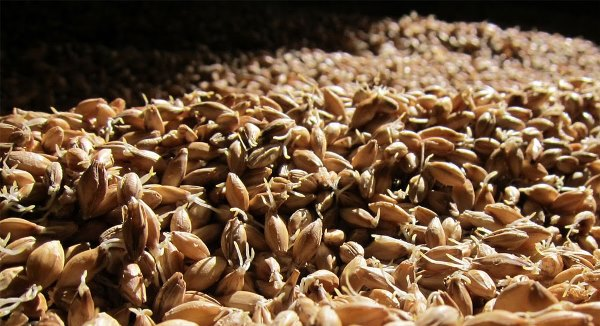
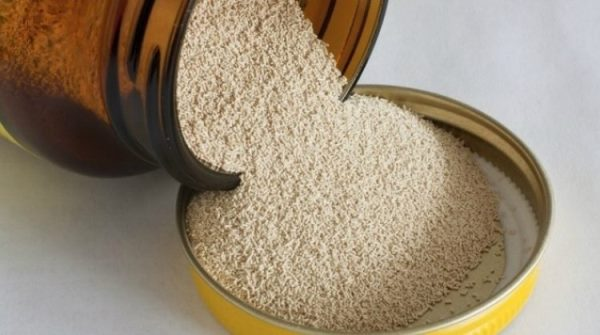

Приготовление пива – достаточно кропотливый и длительный процесс. Обычно пивные ингредиенты закупаются большими партиями, чтобы всегда иметь возможность использовать их в пивоварении. Но чтобы напиток получился вкусным, ароматным и приятным по цвету, пивные компоненты должны быть не только качественными, но и свежими, а для этого необходимо соблюдать технологию их правильного хранения. Рассмотрим, как хранить солод, хмель и пивоваренные дрожжи, чтобы они всегда оставались в свежем состоянии и не теряли своих первоначальных свойств.
Как хранить солод для пива и солодовые экстракты
Стоит отметить, что в пивоварении используется исключительно солод, который уже отлежался в течение 3-4 недель. Это связано с тем, что только что приготовленный солод очень хрупкий, и оболочка при дроблении даст очень мало муки, но много крупки, что нежелательно при производстве пива. В процессе хранения в сырье происходят физико-химические реакции, которые окончательно подготавливают продукт к использованию в пивной индустрии. Поэтому важность правильного хранения пивного солода переоценить трудно – это не только гарантия свежести пива, но и необходимый процесс для получения напитка высокого качества.
Обычно цельные зерна солода очень хорошо поддаются хранению и не теряют своих положительных свойств в течение года после производства. Их можно упаковывать как в мешки или контейнеры, так и в полиэтиленовые пакеты – солод прекрасно себя чувствует в любом месте. Однако к помещению, в котором находится это сырье, предъявляются определенные требования, в частности:
- Воздух не должен быть влажным;
- В помещение не должен проникать дневной свет;
- Нужно контролировать помещение, периодически проверяя наличие в нем паразитов и уничтожая их при необходимости;
- Температура воздуха должна находиться в пределах 10-20 градусов.
Стоит отметить, что эти правила относятся к цельнозерновому солоду. Молотое сырье хранению не поддается, поскольку в это время в нем могут начаться окислительные реакции.
Если срок годности солода составляет год, то солодовые экстракты хранятся намного меньше – обычно не более 3-4 месяцев при определенных условиях. Точный срок годности необходимо узнать у производителя – обычно он написан на этикетке. Солодовые экстракты, в основном, продаются в пластиковых пакетах. Такая продукция не будет храниться более месяца, поэтому если вам необходимо продлить этот срок, поместите сырье в герметичную емкость, где он может лежать до 3-4 месяцев. Если же после этого вы еще и охладите экстракт, то вы выиграете еще 1-2 месяца. Требования к помещению, в котором хранится солодовый экстракт, следующие:
- В помещение не должен проникать солнечный свет;
- Температура воздуха не должна превышать 15 градусов.
Если речь идет о жидком экстракте солода, его необходимо хранить в холодильнике. Срок годности составляет примерно 5 месяцев, но если вы уже открыли банку, то ее содержимое лучше заморозить, тогда вы выиграете еще 3 месяца времени. Жидкий солодовый экстракт также не должен подвергаться воздействию прямых солнечных лучей и высоких температур.
Как хранить хмель
Срок годности хмеля зависит от его конкретного вида. Некоторые сорта могут храниться до года, некоторые – не более 2 месяцев. Это необходимо уточнять у поставщика. В целом, хмель гораздо более восприимчив к окружающим факторам, чем солод. Требования к его хранению таковы:
- Упаковывается сырье в герметичный пакет или стеклянный контейнер;
- Место хранения хмеля – морозильная камера;
- Необходимо полностью оградить хмель от воздействия тепла и света;
- Нельзя допускать контакта упакованного сырья с кислородом.
Стоит отметить, что при неправильном или слишком длительном хранении хмель полностью теряет свои свойства, что отражается на вкусе, оттенке и аромате приготовленного пива. Хмель перестает горчить и издавать аромат приятных масел, соответственно, пиво также не будет обладать этими свойствами. Поэтому при хранении хмеля необходимо учитывать два параметра – срок его годности, указанный производителем, а также условия, в которых хранится сырье.
Как хранить пивные дрожжи
Сухие пивные дрожжи очень непритязательны к условиям хранения. Срок их годности достигает 1,5-2 лет, если они находятся в закрытом пакете при температуре воздуха 16-25 градусов. Это критерии, которых даже не нужно добиваться – дрожжи будут отлично себя чувствовать в любой комнате, но только не в подвальном помещении. Если все же вам необходимо еще на какое-то время продлить срок годности дрожжей, вы можете их заморозить. Это даст вам еще 3-4 месяца.
С жидкими пивными дрожжами все обстоит немного сложнее. Их необходимо хранить либо в стеклянных банках, либо в закрытых пакетах. И хотя срок их годности составляет 3-4 месяца, ежемесячно это сырье утрачивает около 20% своих первоначальных свойств. Поэтому чем быстрее вы используете жидкие пивные дрожжи, тем выше будет качество пива. Место хранения дрожжей – холодильник или морозильная камера.
Таким образом, можно сделать вывод, что к отрицательным факторам, которые могут уменьшить срок хранения пивных ингредиентов, относят дневной свет, высокую температуру воздуха, попадание кислорода и влаги. Обеспечив правильные условия хранения компонентов, можно продлить их свежесть не на один месяц.